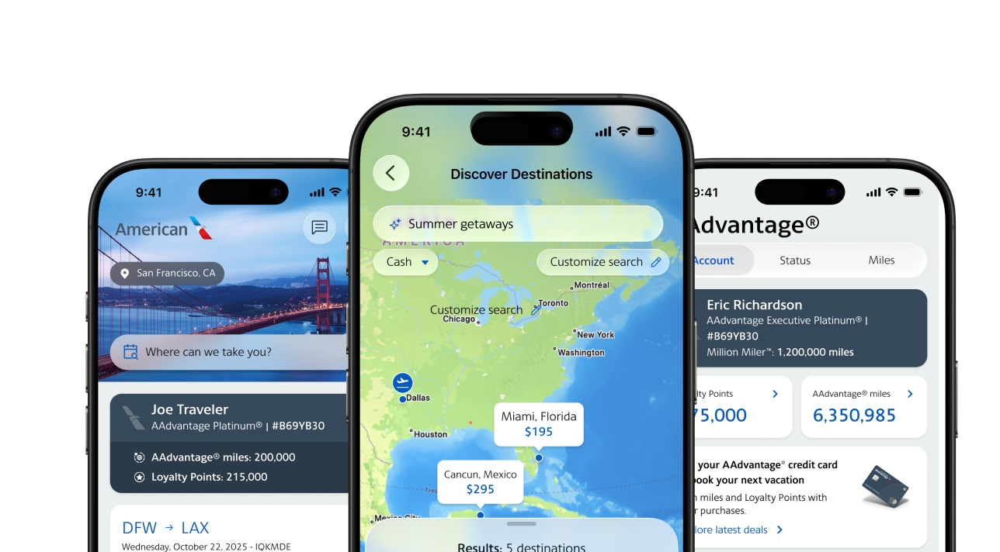
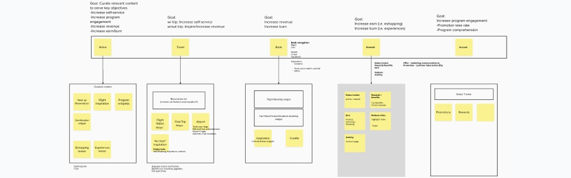
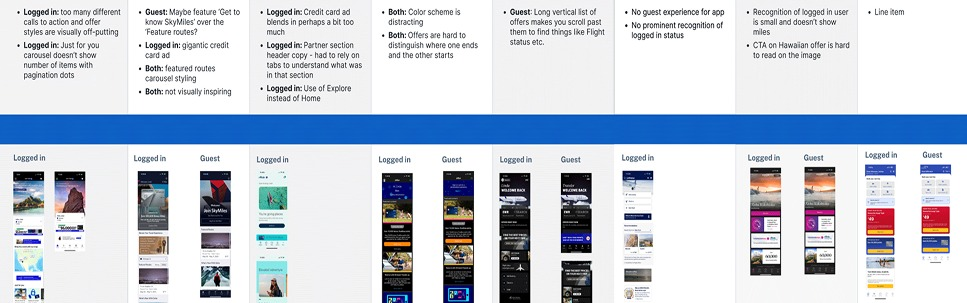
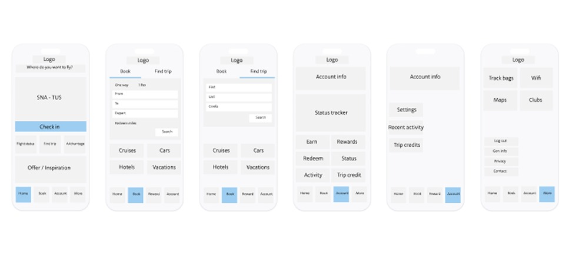
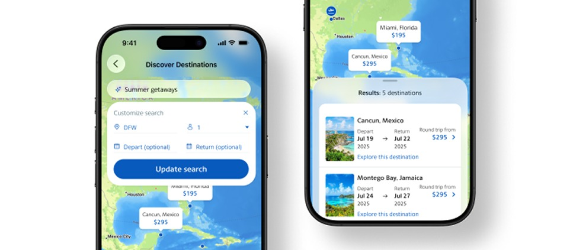
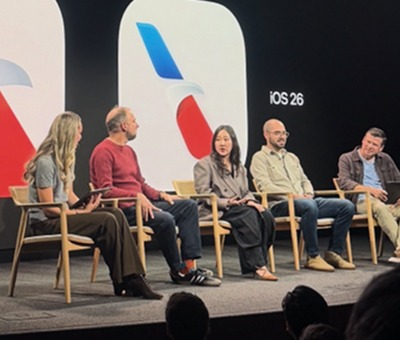
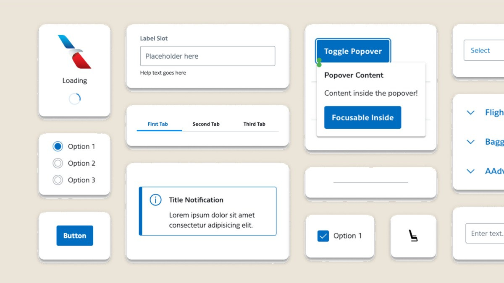

A full app redesign with Apple that exceeded revenue forecast by $2.3 million and earned featured placement in the App Store.

Overview
The UX team, in partnership with Apple, product, and engineering, redesigned the American Airlines app to align with iOS 26 and Liquid Glass, Apple's first major redesign of its own design language in more than a decade. Through competitive audits, user research and rapid prototyping, the team translated Apple's new design standards into a streamlined, customer-centered experience. Usability studies validated design decisions, reduced rework and ensured alignment with both customer needs and business goals. Because Apple updates its platform standards every year, this kind of redesign isn't a one-time event. It's a recurring capability. Meeting that bar consistently, without day-to-day direction from me, is the clearest proof that the standards I've built into the organization hold up under real pressure, not just when conditions are predictable.
Objectives
Discover and Define
The team conducted a competitive analysis and audit of the app, targeting improvements to revenue-generating flows, and defined the design strategy through stakeholder interviews to ensure alignment with business goals and technical feasibility. The navigation experience was audited specifically to improve discoverability and quick access to frequently used features, while the team prioritized enhancements beyond the day of travel to include loyalty, rewards, trip management and a more personalized booking experience.


Design and Deliver
The team held twice-weekly design reviews with product, moving from wireframes to high-fidelity prototypes tested with real users and focus groups. Feedback came through a mix of unmoderated research, in-person sessions at Admirals Club lounges and focus groups, capturing user sentiment and validating the new experience before launch. A new AI-generative booking feature was designed, tested and developed in-house, letting customers search by describing what they're looking for rather than filtering manually. Final designs were completed in close collaboration with Apple as part of the Liquid Glass rollout, and with engineering to ensure a smooth, fully tested launch.



Outcomes
- A native, in-house AI-generative booking feature shipped as part of the redesign, letting customers search by describing what they want rather than filtering manually
Built by the American Airlines UX, Product and Engineering teams, in partnership with Apple, operating under the design and research standards established across Becky Sherman's organization.
More results

Booking engine redesign

Aileron design system